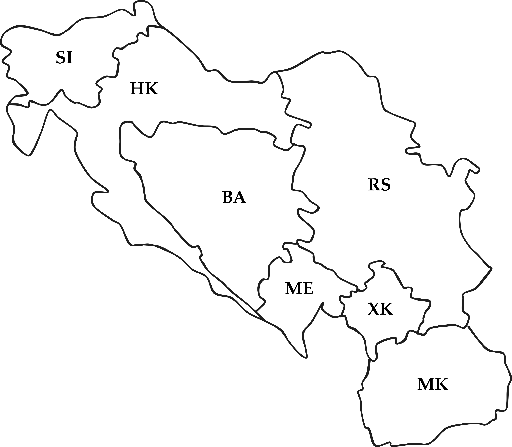

CSCI 4511/6511
Homework 1 is due today at 11:55 PM
Homework 2 is due on 21 February at 11:55 PM
Autograder
So far:
Reality:
One extreme:
üòê
Other extreme:
üòê
Example:
…what about friendship?
Pruning removes the need to explore the full tree.
Select moves based on a heuristic.
Previously: Max and Min alternate turns
Now:
üò£
ü´†
What is to be done?
Why?

Two possibilities:
Why have two different representations?
Constraint graph: edges are constraints
Constraint hypergraph: constraints are nodes
Backtracking search:
Tree-structured CSPs:
Linear time solution
Directional arc consistency: \(X_i \rightarrow X_{i+1}\)
Cutsets
Sub-problems
\[\begin{aligned} \max_{x} \quad & \boldsymbol{c}^T\boldsymbol{x}\\ \textrm{s.t.} \quad & A\boldsymbol{x} \leq \boldsymbol{b}\\ &\boldsymbol{x} \geq 0 \\ \end{aligned}\]
\[\begin{aligned} \min_{x} \quad & f(\boldsymbol{x})\\ \textrm{s.t.} \quad & g_i(\boldsymbol{x}) \leq 0\\ & h_i(\boldsymbol{x}) = 0 \\ \end{aligned}\]
\(R_{HK} \Rightarrow \neg R_{SI}\)
\(G_{HK} \Rightarrow \neg G_{SI}\)
\(B_{HK} \Rightarrow \neg B_{SI}\)
\(R_{HK} \lor G_{HK} \lor B_{HK}\)
…
Goal: find assignment of variables that satisifies conditions
Stuart J. Russell and Peter Norvig. Artificial Intelligence: A Modern Approach. 4th Edition, 2020.
Mykal Kochenderfer, Tim Wheeler, and Kyle Wray. Algorithms for Decision Making. 1st Edition, 2022.
Stanford CS231
Stanford CS228
UC Berkeley CS188